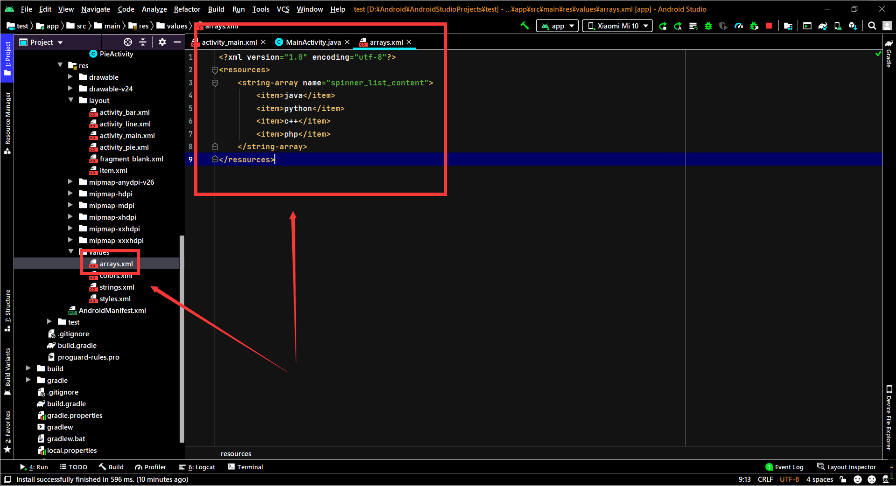
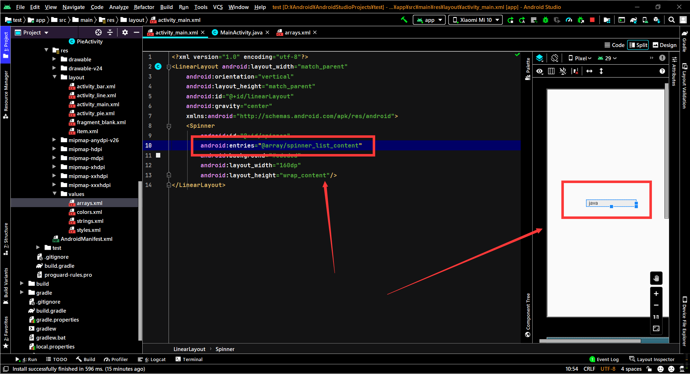
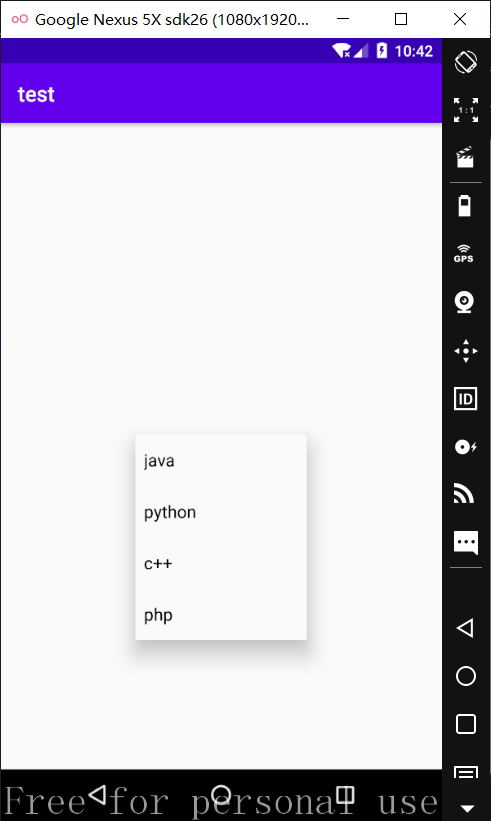
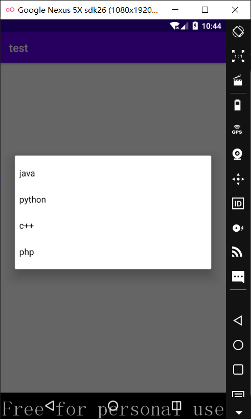
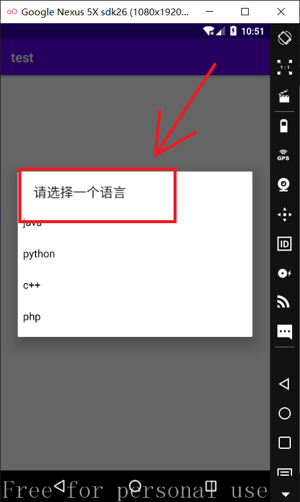

Android-spinner
添加spinner控件
在布局文件中插入<spinner/>标签1
2
3
4
5
6
7
8
9
10
11
12
13
<LinearLayout android:layout_width="match_parent"
android:orientation="vertical"
android:layout_height="match_parent"
android:id="@+id/linearLayout"
android:gravity="center"
xmlns:android="http://schemas.android.com/apk/res/android">
<Spinner
android:id="@+id/spinner"
android:background="#ededed"
android:layout_width="160dp"
android:layout_height="wrap_content"/>
</LinearLayout>
android:entries
静态绑定数据，在value目录下创建arrays.xml，向其<resource/>中加入1
2
3
4
5
6<string-array name="spinner_list_content">
<item>java</item>
<item>python</item>
<item>c++</item>
<item>php</item>
</string-array>

在spinner的布局中引用1
android:entries="@array/spinner_list_content"

android:spinnerMode
有两种显示方式，下拉菜单和弹出框，通过android:spinnerMode设置1
android:spinnerMode="dropdown"

1 | android:spinnerMode="dialog" |

android:prompt
dialog选择列表时的提示，在xml中选择这个字符串时只能调用string.xml中的值，不能直接填字真是操蛋1
android:prompt="@string/spinner_prompt"

spinner的方法
动态添加spinner列表
1 | private void init() { |
设置顶部提示
doalog模式下顶部的提示1
spinner.setPrompt("请选择一个语言");
默认选择项
如果有添加选择监听器，会响应一次选择监听1
spinner.setSelection(0);
选择监听器
选择列表项时响应1
2
3
4
5
6
7
8
9spinner.setOnItemSelectedListener(new AdapterView.OnItemSelectedListener() {
public void onItemSelected(AdapterView<?> adapterView, View view, int i, long l) {
Toast.makeText(MainActivity.this,"选择了" + starArray[i],Toast.LENGTH_SHORT).show();
}
public void onNothingSelected(AdapterView<?> adapterView) { }
});